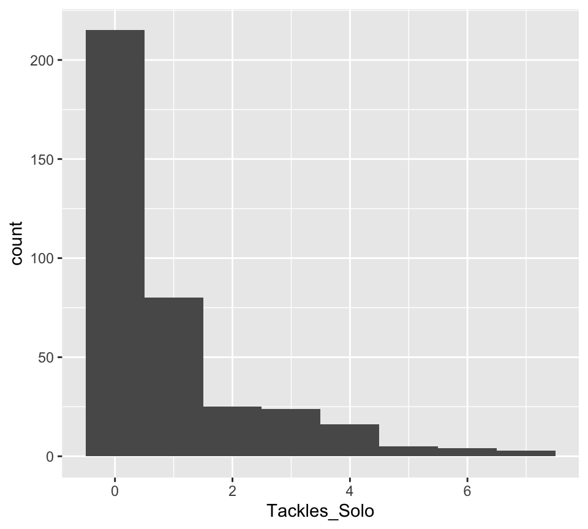
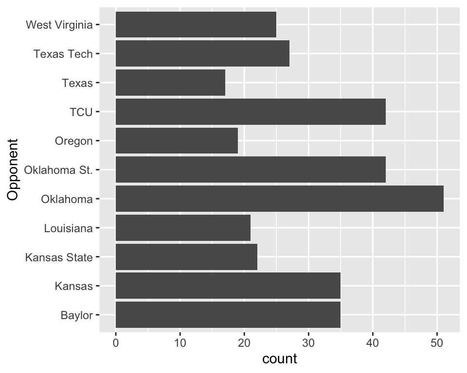

Cyclone Football
Xiongtao Dai
dplyrdplyr verbsThe following command is going to load the per-game defense data into your R session:
## tibble [372 × 11] (S3: tbl_df/tbl/data.frame)
## $ Name : chr [1:372] "Rose, Mike" "Rose, Mike" "Rose, Mike" "Rose, Mike" ...
## $ Opponent_Opponent: chr [1:372] "Louisiana" "TCU" "Oklahoma" "Texas Tech" ...
## $ Tackles_Solo : chr [1:372] "2" "6" "6" "3" ...
## $ Tackles_ASST : chr [1:372] "4" "4" "5" "0" ...
## $ Tackles_TFL : chr [1:372] "1.0" "0" "1.5" "1.0" ...
## $ Tackles_Sack : chr [1:372] "0" "0" "0.5" "0" ...
## $ Turnover_FF : chr [1:372] "0" "0" "0" "0" ...
## $ Turnover_FR : chr [1:372] "0" "0" "0" "0" ...
## $ Turnover_INT : chr [1:372] "0" "1" "0" "0" ...
## $ Pass_QBH : chr [1:372] "0" "0" "1" "0" ...
## $ Pass_PB : chr [1:372] "0" "0" "0" "0" ...
For this your turn use the defense data from the cyclonesFootball2020.xlsx
 What is the total number of tackle assists per game?
What is the total number of tackle assists per game?  Which two ISU players have the highest average number of tackle assists?
Which two ISU players have the highest average number of tackle assists?  Is our defense more successful against U of Iowa or TCU? Filter data first and compare total number of solo tackles.
Is our defense more successful against U of Iowa or TCU? Filter data first and compare total number of solo tackles.  What is the relationship between the ability of solo tackles and tackles assists?
What is the relationship between the ability of solo tackles and tackles assists?  Find a plot that shows the differences for each one of the above summaries.
Find a plot that shows the differences for each one of the above summaries.
defenseas.numeric:library(ggplot2)
library(dplyr)
defense <- defense %>%
mutate(Tackles_Solo = as.numeric(Tackles_Solo),
Tackles_ASST = as.numeric(Tackles_ASST))
str(defense)## tibble [372 × 11] (S3: tbl_df/tbl/data.frame)
## $ Name : chr [1:372] "Rose, Mike" "Rose, Mike" "Rose, Mike" "Rose, Mike" ...
## $ Opponent_Opponent: chr [1:372] "Louisiana" "TCU" "Oklahoma" "Texas Tech" ...
## $ Tackles_Solo : num [1:372] 2 6 6 3 7 4 7 4 4 2 ...
## $ Tackles_ASST : num [1:372] 4 4 5 0 3 1 4 3 9 3 ...
## $ Tackles_TFL : chr [1:372] "1.0" "0" "1.5" "1.0" ...
## $ Tackles_Sack : chr [1:372] "0" "0" "0.5" "0" ...
## $ Turnover_FF : chr [1:372] "0" "0" "0" "0" ...
## $ Turnover_FR : chr [1:372] "0" "0" "0" "0" ...
## $ Turnover_INT : chr [1:372] "0" "1" "0" "0" ...
## $ Pass_QBH : chr [1:372] "0" "0" "1" "0" ...
## $ Pass_PB : chr [1:372] "0" "0" "0" "0" ...Tackles_Solo
## # A tibble: 1 x 2
## n solo
## <int> <dbl>
## 1 372 336defense %>%
group_by(Opponent) %>%
summarize(n = n(), solo = sum(Tackles_Solo)) %>%
arrange(solo) %>%
head(3)## # A tibble: 3 x 3
## Opponent n solo
## <fct> <int> <dbl>
## 1 Texas 30 17
## 2 Oregon 27 19
## 3 Louisiana 31 21The total number of solo tackles in each game
soloPerGame <- defense %>%
group_by(Opponent) %>%
summarize(solo = sum(Tackles_Solo))
ggplot(soloPerGame, aes(x=Opponent, weight=solo)) + geom_bar() + coord_flip()
n() provides the number of rows of a subset:## tibble [11 × 3] (S3: tbl_df/tbl/data.frame)
## $ Opponent: Factor w/ 12 levels "UNI","Baylor",..: 2 3 4 5 6 7 8 9 10 11 ...
## $ n : int [1:11] 30 35 33 31 63 30 27 30 30 31 ...
## $ solo : num [1:11] 35 35 22 21 51 42 19 42 17 27 ...